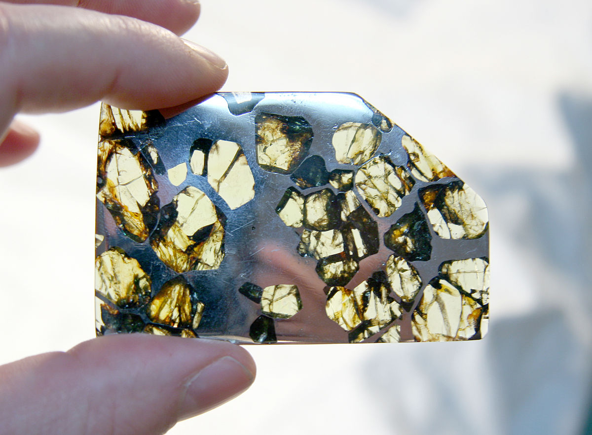

Esquel (meteorite)

ABOUT:
Esquel is a meteorite found near Esquel, a patagonian town in the northwest part of the province of Chubut in Argentina. It is a pallasite, a type of stony–iron meteorite that when cut and polished shows yellowish olivine (peridot) crystals.
In 1951 a farmer uncovered a meteorite in an unknown location near Esquel while digging a hole for a water tank. The meteorite was purchased from the finders and taken to the United States in 1992 by meteorite expert Robert Haag. The Esquel pallasite is known worldwide among collectors and the meteoritical scientific community. Esquel is regarded as one of the most beautiful meteorites ever found and is also one of the most desirable pallasites among meteorite collectors. It is a main group pallasite (MGP).